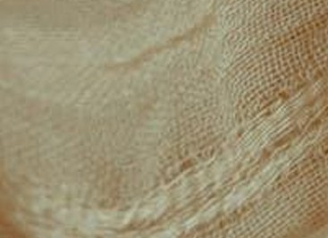

SEREZ STUDIO
Brand Style Guide
Erotic Massages, Serez Studio

Erotic Massages, Serez Studio
Elegant intimacy and conscious touch. The visual proposal is based on the capacity of touch to generate deep and transformative connections. Instead of resorting to explicit images, we seek to evoke sensations through a combination of a sober palette with pink accents that suggest warmth and sophistication.
The use of serif and sans serif typography creates a clear hierarchy that guides the user, while generous spaces and asymmetrical composition recall the fluidity of the body. Subtle interaction, for example, the hover effect of buttons and the entrance animation of components, reinforces the idea of delicacy and dynamism.
Furthermore, we incorporate light textures and decorative elements that recall the delicacy of fabric and skin, without falling into vulgarity. This combination transmits wellness, discovery, and curiosity.

The palette combines dark and neutral tones with pink accents to generate contrast, warmth, and elegance. The colors of the landing page are used as a base and two dark pinks extracted from the brand visual references are added.
The contrast between the classic elegance of Playfair Display for titles and the modern cleanliness of Inter for body text reflects the balance between tradition and contemporaneity.
Used for main headers and high-impact messages. Projects sophistication.
Ideal for separating large blocks of content and marking key sections.
Secondary hierarchy for feature or service cards.
Body Text - Inter Regular
Reading should be comfortable, so we use generous line spacing and soft colors to avoid visual fatigue.
Labels and CTA - Inter Medium
In uppercase, with wide spacing, used in buttons, small labels, and categories to give a visual break.
Photographic direction is essential to convey the "dark editorial" concept. Images should focus on details, skin texture, penumbra, and suggestive lighting, avoiding obvious or overly lit framing.
In the interface, photographs are presented within containers with asymmetrical rounded borders, for example, applying a pronounced radius on a single corner (such as 150px to 200px) to break grid rigidity and provide organic fluidity. It is always recommended to apply a subtle gradient overlay to ensure the legibility of superimposed text.
The scheme details the framing of the images. Constant padding creates an elegant "air", while the asymmetrical bottom right radius projects dynamism.
The graphic style is built around three pillars: fluid composition, discreet resources, and textures that evoke intimacy and touch.
Organic Flow: Pages avoid traditional rigidity using staggered blocks, large margins (air), and controlled asymmetry. This reflects the fluidity of a sensual movement and avoids the sensation of a corporate or static interface.
The "skin" of the site. We apply patterns with 2% to 4% opacity to add elegant visual noise, eliminating the coldness of flat backgrounds and bringing the digital closer to physical tactile perception.
Subliminal interface elements designed to structure, accompany, and guide the user smoothly.
Lines (5% opacity)
Circular Adornment
Capsule Button